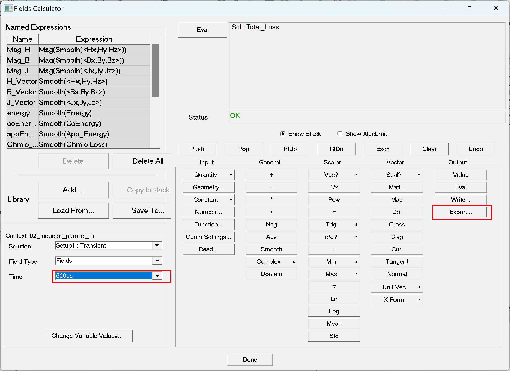
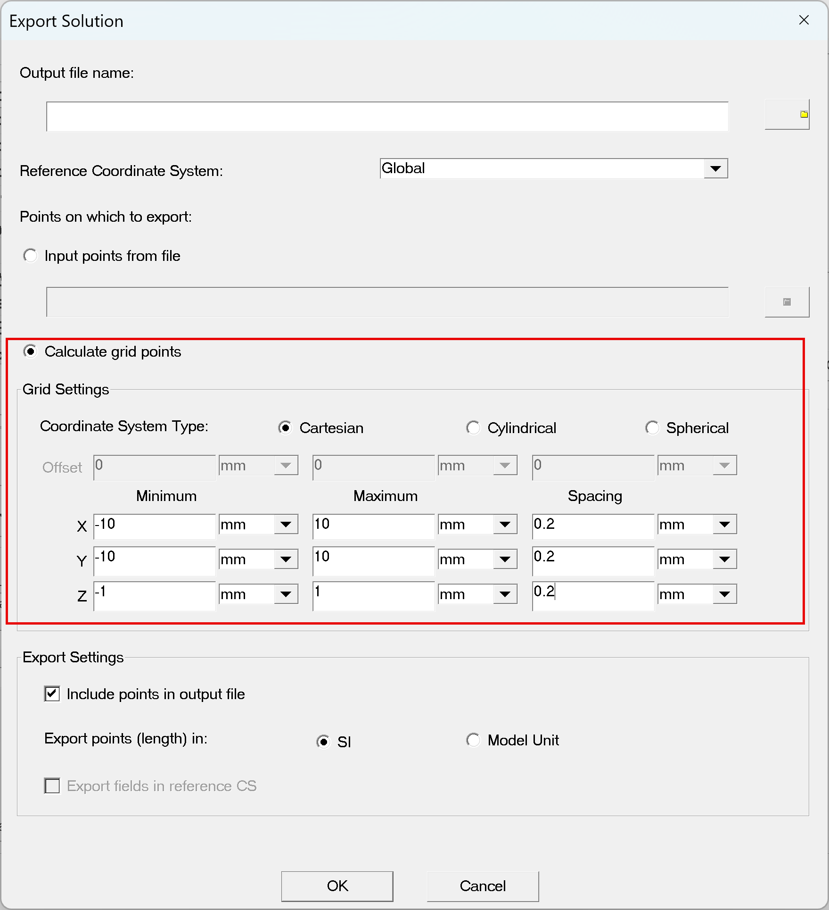

Export 場數據資訊¶
場資訊交換介紹¶
Maxwell 提供匯出模擬的場資訊給使用者作資料交換，場的格式是以*.fld的檔案格式，*.fld 主要方便 資料交換與分析。
在 Maxwell 中最常被輸出的 *.fld 資料包括：
- Joule loss density (導體損耗分布)
- Core loss density (磁芯損耗分布)
- 磁通密度 B-field
- 磁場強度 H-field
- 電流密度 J-field
- 電場分布 E-field
這些分布可用於：
- 找出 損耗熱點 (hotspot) → 作為散熱設計依據
- 分析 磁通集中區域 → 改善磁芯設計
- 提供 外部耦合分析 → 熱–力–聲 模擬輸入
範例：Transient Solver匯出損耗資訊¶
下面以Transient Solver匯出損耗資訊為例作介紹，如果讀者是要使用其他求解器或是匯出其他的資訊(例如B場或J場），作法是相同的。
{% hint style="info" %} ANSYS軟體中的物理場耦合，ANSYS RD都已經為其量身訂做了制式的流程，建議使用軟體的串流模擬流程，加快模擬時間與減少模擬錯誤產生。 {% endhint %}
第一步是需要完成Maxwell的模擬，特別要注意的是要在Setup中把場資訊儲存做勾選。
再來是打開Field Calculator，點選Export。

圖1-5
- 輸入檔名，匯出 *.fld的檔案資訊。
- 一次只能匯出一個時間點，且需要定義輸出的格點範圍及間距。請先在模型中量測物件的格點範圍及間距。
- 如果物件體積大的時候，檔案會很驚人，所以為避免檔案過大，建議可以輸出關注部分的範圍就好。

圖1-6
*.fld 檔案 ¶
最後輸出的*.fld檔案內容包含了X Y Z的座標軸與場資訊。以圖1-7為例：
- Grid Output Min/Max
- 定義輸出網格的空間範圍：
- Min: −20mm,−18mm,−6mm-20 mm, -18 mm, -6 mm−20mm,−18mm,−6mm
- Max: 20mm,18mm,6mm20 mm, 18 mm, 6 mm20mm,18mm,6mm
- 意即輸出場數據的 3D box 範圍。
- Grid Size
- 每個維度的網格解析度：0.2mm,0.2mm,0.2mm0.2 mm, 0.2 mm, 0.2 mm0.2mm,0.2mm,0.2mm
- 代表輸出資料是以均勻網格抽樣的。
- 欄位標頭 (Header)
X, Y, Z, Scalar data "Total_Loss"- 前三欄是座標位置，最後一欄是對應點的「總損耗密度 (Total Loss)」。
- 數據行 (Data Rows)
- 每一行對應一個網格點：
- X座標 Y座標 Z座標 場數據值
.png)
圖1-7